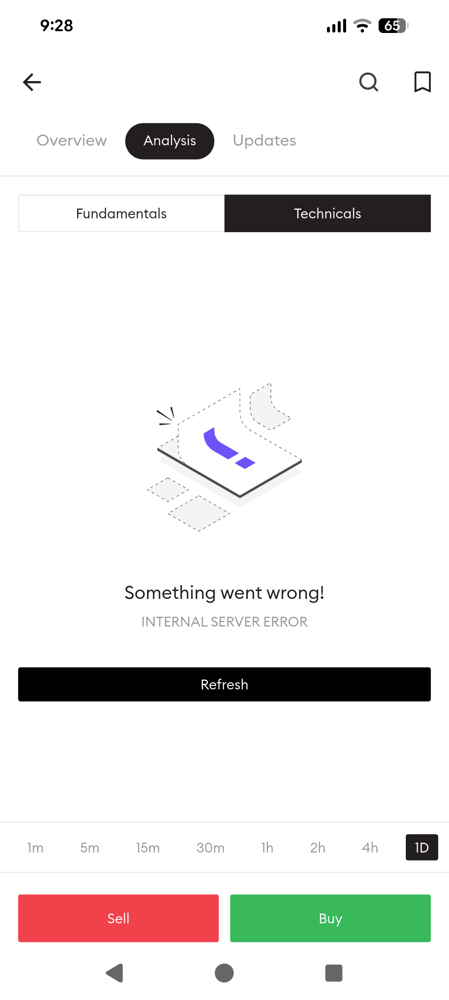
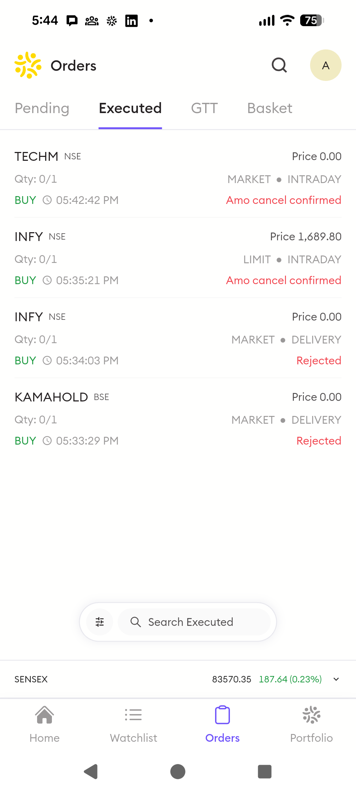

Candidate: Abhineet Jain
Submission Date: January 17, 2026
Deliverable: Phase 1 – Feature Evaluation & Competitive Analysis
This document presents a structured product evaluation of the Pocketful mobile application, rooted in a “Trust → Clarity → Differentiation” strategic framework. Based on hands-on testing including KYC completion and simulated trading activities, the analysis identifies critical usability gaps and proposes a phased roadmap to transform Pocketful from an “Emerging Player” to the “Reliable Innovator” of the Indian brokerage market.
Deliverables Covered:
The following personas guide this analysis and feature recommendations:
Market Context Update (Jan 2025): India has 212M+ demat accounts but only 50M active traders. The massive ~82% dormancy gap represents a “Guidance Void” that neither Zerodha (too complex) nor Groww (too basic) fills. Pocketful’s edge lies in bridging this gap with institutional-grade tools and human persistence.
Platform Tested: Pocketful Android App on Pixel 8 Pro
Network: 100 Mbps Wi-Fi / 5G
Date: January 2026
| Step | Action | Time Taken | Experience |
|---|---|---|---|
| 1 | App Download & Install | ~1 min | Seamless experience (Play Store) |
| 2 | Mobile Number Verification | ~1 min | OTP received promptly |
| 3 | Registration | ~2 min | Lag with Gmail; Direct email smooth |
| 4 | PAN & Aadhaar Entry | ~2 min | Clean form, auto-fetch worked |
| 5 | e-Sign (DigiLocker) | ~3 min | Redirect flow was smooth |
| 6 | Bank Account Linking | ~2 min | Penny drop verification (1 INR credit) confirmed account |
| 7 | Selfie Capture | ~1 min | Minor issue: reflection on specs |
| Total | ~12 min | Comparable to Zerodha/Groww |
| Issue | Impact | Suggested Improvement |
|---|---|---|
| Cold Start Lag | High | App takes >10s to load on all devices (Flaw #3). |
| Gmail Registration Lag | Medium | “Sign up with Gmail” was noticeably slower than direct email. |
| Selfie Reflection Error | Low | Capture bot gave “Eyes Closed” error due to specs reflection. |
| No Time Estimate | Low | User anxiety about process length. |
Based on the audit findings and competitive gaps, I propose the following feature enhancements.
| Metric | Description | How We’ll Measure |
|---|---|---|
| 🔵 Platform Trust | User confidence in app reliability | Error-related abandonment, support tickets |
| 🟢 Daily Engagement | Frequency and depth of sessions | Time-to-action, session duration |
| 🟣 Market Accessibility | Reach to underserved segments | Offline success, jargon comprehension |
| 🟠 User Retention | Long-term platform stickiness | Churn reduction, feature adoption |
| Rank | Feature | Target Personas | Target Metrics | Impact | Effort |
|---|---|---|---|---|---|
| 1 | Smart Error Recovery | Priya, Raj, Amit | 🔵 Trust, 🟠 Retention | High | Medium |
| 2 | Transparent Status Explainers | Raj | 🟣 Accessibility, 🟢 Engagement | Medium | Low |
| 3 | Resilient Offline Mode | Amit | 🟣 Accessibility, 🔵 Trust | High | High |
| 4 | Context-Aware Smart Home | Priya, Raj | 🟢 Engagement, 🟠 Retention | Medium | High |
| 5 | Smart Order Assistant | Priya | 🟢 Engagement, 🟠 Retention | Medium | Medium |
Problem: When Pocketful encounters API failures, users see ‘Something went wrong! Internal Server Error.’ Priya (active trader) loses critical seconds; Raj (beginner) panics with no guidance.
Solution: Transform errors into opportunities: classify issues, explain in plain language, and offer contextual recovery actions. Priya stays trading, Raj feels supported.
Key Capabilities:
Success Metrics:
Problem: Raj (beginner) sees ‘0.0x Subscribed’, ‘Delta 0.65’, and ‘AMO’ without understanding. Jargon causes hesitation and missed opportunities.
Solution: Make complexity accessible: inline tooltips with plain-English definitions and social proof help Raj make confident decisions.
Key Capabilities:
Success Metrics:
Problem: Amit (tier-2 user) faces white screens during network drops while trading. The app becomes unusable just when he needs it most.
Solution: Expand to 100M underserved users: cached data, progressive loading, and ‘Lite Mode’ ensure Amit can always access his portfolio.
Key Capabilities:
Success Metrics:
Problem: Priya needs quick-trade access at 9:15 AM, but sees the same layout as Raj who wants to check his MF SIPs at night.
Solution: Personalization that understands intent: Priya gets action-focused trading at market open; Raj sees portfolio analysis in the evening.
Key Capabilities:
Success Metrics:
Problem: Priya (active trader) executes orders manually while institutions use automation. This leads to emotional trading and missed opportunities.
Solution: Democratize smart trading: IF-THEN rules, bracket orders, and templates let Priya trade like an institution—fully SEBI compliant.
Key Capabilities:
Success Metrics:
| Feature | Risk Type | Risk Description | Mitigation Strategy |
|---|---|---|---|
| Smart Error Recovery | Technical | Over-classifying errors could mislead users | Extensive error taxonomy testing; conservative initial rollout |
| Smart Error Recovery | UX | Too many alternatives could overwhelm users | Limit to 2-3 contextual options; A/B test for optimal count |
| Transparent Status Explainers | Content | Outdated or incorrect explanations erode trust | Content review process; user feedback loop for corrections |
| Resilient Offline Mode | Data Integrity | Stale cached data could lead to poor trading decisions | Clear “Last updated X minutes ago” timestamps; disable trading on very old data |
| Smart Order Assistant | Regulatory | SEBI may view as “algo trading” if not positioned carefully | Legal review; frame as “conditional orders”; require user acknowledgment |
| Smart Order Assistant | User Loss | Automated orders could amplify losses in volatile markets | Mandatory stop-loss; position limits; educational warnings |
| Context-Aware Smart Home | Privacy | Behavioral tracking could raise data concerns | Transparent data usage policy; opt-out option; on-device processing where possible |
When Pocketful encounters API failures or data unavailability, users see generic messages with no sense of whether to wait or abandon.
Replace all error states with an Intelligent Recovery System (Actionable Toasts):
┌─────────────────────────────────┐
│ ⚠️ Technical Data Unavailable │
│ │
│ What happened: │
│ Data for IRCTC is being │
│ refreshed. Usually takes ~30s. │
│ │
│ What you can do: │
│ ┌─────────────────────────────┐ │
│ │ 🔄 Retry in 30 seconds │ │
│ │ 📊 View Similar: RVNL │ │
│ │ 📈 Use Cached Data │ │
│ └─────────────────────────────┘ │
│ │
│ 💬 Report this issue │
└─────────────────────────────────┘
| Component | Purpose |
|---|---|
| Error Classification Header | Distinguishes error types (Network / Data / Server) |
| Plain-English Explanation | Tells user what happened in accessible language |
| Estimated Resolution | Sets expectations (“Usually takes ~30s”) |
| Contextual Recovery Actions | 2-3 alternatives based on user’s intended action |
| Feedback Link | Captures edge cases for product improvement |
[User Action] → [Error Detected] → [Recovery Options Active <100ms]
│
┌─────────────────────┼─────────────────────┐
▼ ▼ ▼
[Retry Success] [Alternative Selected] [Cached Data Used]
│ │ │
└─────────────────────┴─────────────────────┘
│
▼
[Recovery Path Logged]
(Personalize future Quick Actions)
| Metric | Baseline | Target |
|---|---|---|
| Error Recovery Rate | Low (users retry blindly) | Significant improvement |
| Session Abandonment After Error | High | Reduced by ~50% |
| Error-Related Support Tickets | High volume | Reduced by ~40% |
| User Satisfaction (Error Flow) | Low | Improved |
| # | Flaw | Severity | Impact Type |
|---|---|---|---|
| 1 | Generic Error Messaging | Medium-High | Trust Erosion |
| 2 | UI Hierarchy Breakdown in Options Trading | High | Cognitive Friction |
| 3 | Cold Start Lag on High-End Devices | High | Performance Perception |
| 4 | Margin Field Flicker Without Loading State | Medium-High | Execution Anxiety |
| 5 | Inconsistent Order Lifecycle & Cancel UX | High | Trade Reliability |
| 6 | Brand & Trust Leakage in Auth Flow (Desktop) | Medium | Trust Perception |
Observed Behavior: The “Technicals” tab for certain instruments displays “Something went wrong! Internal Server Error” with no differentiation from a complete system failure.
User Impact: Breaks trust; no recovery guidance; generates support tickets.
Root Cause Hypothesis: Backend returns catch-all 500 errors; frontend lacks error stratification.
Suggested Solution: → Smart Error Recovery (Feature #1 above)
Reference: Screenshot 1
Observed Behavior: The global navbar remains visible during options trading, crowding trade-critical controls.
User Impact: Increased cognitive load; accidental taps; unfavorable comparison to Zerodha’s modal approach.
Root Cause Hypothesis: No semantic screen zoning for “execution mode” vs. “browsing mode.”
Suggested Solution: Implement focused trading mode that hides navigation during execution flows.
Reference: Screenshot 2
Observed Behavior: App launch takes >10 seconds to become interactive even on Pixel 8 Pro with 100 Mbps Wi-Fi. In contrast, Zerodha loads instantly (~2-3s), and Groww is responsive within ~4s.
User Impact:
Root Cause Hypothesis: Heavy cold-start hydration blocking UI rendering; backend tightly coupled to initial render.
Suggested Solution:
Observed Behavior: When switching between Delivery/Intraday, the “Margin Required” field briefly shows “–” before populating.
User Impact: Creates doubt about available funds; may cause trade hesitation.
Root Cause Hypothesis: Async margin calculation without optimistic UI placeholder.
Suggested Solution: Show skeleton/shimmer state or last-known value with “updating…” indicator.
Reference: Screenshot 3
Observed Behavior:
User Impact: False sense of order success; confuses new traders; breaks interaction patterns.
Root Cause Hypothesis: Missing pre-submission validation; insufficient progressive disclosure.
Suggested Solution: Add pre-flight validation; implement inline tooltips for jargon; standardize button placement.
Reference: Screenshot 4
Observed Behavior:
During Google sign-in, users are redirected to a generic OAuth screen that displays the destination as a raw Firebase project domain (pktfl-88122.firebaseapp.com), with no visible Pocketful branding or contextual explanation.
User Impact:
Root Cause Hypothesis: Default Firebase OAuth configuration used without a customized, branded consent experience.
Suggested Solution: Implement a fully branded OAuth consent flow using custom domains and scope descriptions (“Continue to Pocketful”).
Reference: Screenshot 5
| Platform | Market Share (Active) | Strategic Focus | Primary Risk/Weakness |
|---|---|---|---|
| Groww | ~27.1% (12.1M users) | High-speed retail acquisition | Basic tools; missing segments |
| Zerodha | ~15.3% (6.8M users) | Professional traders; profitability | Steep user erosion (-15% in 2025) |
| Pocketful | <1% (Emerging) | Institutional trust + Retail ease | Low brand awareness; manual UX |
Comparing the 25-year institutional heritage of PACE vs. digital-first startups.
Bridging technical depth with a frictionless, high-density UI.
Surface dedicated support during critical “Stress Moments” (errors/volatility).
Unlike Zerodha (no RMs) or Groww (call-center only), Pocketful offers a Dedicated RM.
India has 212M+ demat accounts but only 50M active traders. The next wave comes from tier-2/3 cities with limited financial literacy. Execution: Implement Status Explainers + Offline Mode for accessibility. Leverage PACE’s workshop infrastructure.
While individual features have user-level risks, the broader product strategy faces execution risks that must be managed at the portfolio level:
| Risk Domain | Risk Description | Mitigation Strategy |
|---|---|---|
| Resource Contention | “Smart Home” (Phase 2) and “Client Diagnostics” (Phase 1) both heavily tax the Mobile Engineering team. | Staggered Sprinting: Mobile team focuses on Diagnostics in Q1 while Design/Data teams prep Smart Home specs. |
| Dependency Chain | “Status Explainers” (Phase 2) rely on the same taxonomy service as “Smart Error Recovery” (Phase 1). | Unified Taxonomy Service: Build the error classification backend to be extensible for status explanations from Day 1. |
| Market Timing | “Differentiation” (Phase 3) comes late (Month 6+); competitors might copy features. | Fast-Follow “Lite” Features: Ship basic “Status Tooltips” in Phase 1 (as hidden delighters) to signal innovation early. |
| Phase | Timeline | Feature | Strategic Rationale (“Why”) |
|---|---|---|---|
| NOW | 0-3 mo | Smart Error Recovery | Immediate trust repair for critical failures |
| NOW | 0-3 mo | Transparent Status Explainers | Reduce cognitive load on order states |
| NOW | 0-3 mo | Resilient Offline Mode | Critical for tier-2/3 users on patchy networks |
| NEXT | 3-6 mo | Context-Aware Smart Home | Leverage collected analytics for personalization |
| NEXT | 3-6 mo | Smart Order Assistant | Extend value for active traders |
| Screenshot | Description |
|---|---|
|  | Screenshot 1: Generic error message on Technicals tab |
|
Screenshot 2: Options trading UI with navbar interference |
|
Screenshot 3: Margin field showing “–” during async update |
|  | Screenshot 4: Order rejection after ₹0 balance placement |
|
Screenshot 5: Desktop OAuth screen with Firebase branding |
Document prepared by: Abhineet Jain
Contact: abhij1306@gmail.com | LinkedIn
Full PRD: feature_design_prd.pdf | Live Demo: pocketful.vercel.app